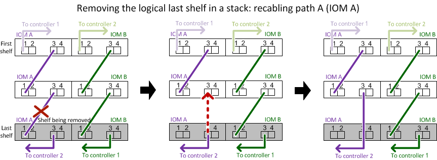
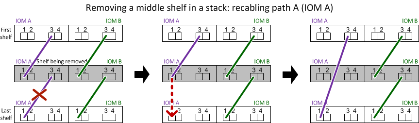

Demander de modifier un document
Demander de modifier un document Modifier sur GitHub
Modifier sur GitHub Guide des contributeurs
Guide des contributeursRetirez à chaud une étagère - étagères avec modules IOM12/IOM12B
Contributeurs
Vous pouvez retirer à chaud un tiroir disque avec des modules IOM12/IOM12B (sans interruption de l’activité, retirer un tiroir disque d’un système sous tension et en E/S) lorsque vous devez déplacer ou remplacer un tiroir disque. Vous pouvez supprimer à chaud un ou plusieurs tiroirs disques n’importe où dans une pile de tiroirs disques ou en supprimer une pile de tiroirs disques.
-
Votre système doit être une configuration haute disponibilité multivoie, des chemins d’accès multiples, une configuration à quatre chemins d’accès (HA) ou à quatre chemins.
Pour les plateformes avec stockage intégré, comme les systèmes AFF A200, AFF A220, FAS2600 et FAS2700, le stockage externe doit être câblé en tant que haute disponibilité multivoie ou sous forme de chemins d’accès multiples.

Pour un système FAS2600 à contrôleur unique doté du stockage externe câblé avec une connectivité multivoie, le système présente une configuration à chemins d’accès multiples, car le stockage interne utilise la connectivité à chemin unique. -
Votre système ne peut pas comporter de messages d’erreur de câblage SAS.
Vous pouvez télécharger et exécuter Active IQ Config Advisor pour afficher tous les messages d’erreur de câblage SAS et les actions correctives que vous devez effectuer.
-
Les configurations de paires HA ne peuvent pas être dans un état de basculement.
-
Vous devez avoir supprimé tous les agrégats des disques (les disques doivent être de rechange) des tiroirs disques que vous supprimez.
Pour tenter cette procédure avec des agrégats du tiroir disque que vous retirez, le système risque de tomber en panne après une incident de plusieurs disques. Vous pouvez utiliser le
storage aggregate offline -aggregate aggregate_nameet ensuite lestorage aggregate delete -aggregate aggregate_namecommande. -
Si vous retirez un ou plusieurs tiroirs disques d’une pile, vous devez avoir pris en compte la distance séparant les tiroirs disques que vous retirez. Par conséquent, si les câbles actuels ne sont pas assez longs, vous devez disposer de câbles plus longs.
-
Meilleure pratique : la meilleure pratique consiste à supprimer les droits de propriété des disques après le retrait des agrégats des disques des tiroirs disques que vous retirez.
La suppression des informations de propriété d’un lecteur de disque de réserve permet d’intégrer correctement le lecteur de disque à un autre nœud (si nécessaire).
|
|
La procédure de suppression de propriété sur les disques durs exige que vous désactiviez l’affectation automatique de propriété de disque. Vous réactivez l’affectation automatique de la propriété de disque à la fin de cette procédure. |
-
Pour un système clustered ONTAP supérieur à deux nœuds, il est recommandé de réaffectés à une paire haute disponibilité autre que celle qui est en cours de maintenance planifiée.
Epsilon reassigning réduit le risque d’erreurs imprévues affectant tous les nœuds d’un système clustered ONTAP. Vous pouvez utiliser les étapes suivantes pour déterminer le nœud qui possède epsilon et reassigner l’epsilon si nécessaire :
-
Définissez le niveau de privilège sur avancé :
set -privilege advanced -
Déterminer quel nœud contient epsilon :
cluster showLe nœud qui contient epsilon affiche
truedans leEpsiloncolonne. (Les nœuds qui ne contiennent pas epsilon showfalse.) -
Si le nœud de la paire HA est en cours de maintenance affiche
true(contient epsilon), puis retirer epsilon du nœud :cluster modify -node node_name -epsilon false -
Assignation d’epsilon à un nœud dans une autre paire haute disponibilité :
cluster modify -node node_name -epsilon true -
Retour au niveau de privilège admin :
set -privilege admin
-
-
Si vous retirez à chaud un tiroir disque d’une pile (mais que vous conservez la pile), vous pouvez le recâter et vérifier un chemin à la fois (chemin A puis chemin B) pour contourner le tiroir disque que vous supprimez afin de maintenir toujours la connectivité à chemin unique des contrôleurs vers la pile.
Si vous n’maintenez pas la connectivité à chemin unique entre les contrôleurs et la pile lors du retrait de la pile afin de contourner le tiroir disque que vous retirez, vous pouvez tomber en panne du système après un incident comportant plusieurs disques. -
Dommages possibles sur les étagères : si vous retirez une étagère DS460C et que vous le déplacez dans une autre partie du centre de données ou le transportez à un autre emplacement, voir la section, or transport DS460C shelves à la fin de cette procédure.
-
Vérifiez que la configuration de votre système est
Multi-Path HA,Multi-Path,Quad-path HA, ouQuad-path:sysconfigVous exécutez cette commande à partir du nodeshell de n’importe quel contrôleur. Une minute peut s’avérer nécessaire pour effectuer la détection par le système.
La configuration est répertoriée dans le
System Storage Configurationlégale.
Pour un système à contrôleur unique de la gamme FAS2600 qui dispose du stockage externe câblé avec une connectivité multivoie, la sortie est affichée comme mixed-pathcar le stockage interne utilise une connectivité à chemin unique. -
Vérifiez que les disques des tiroirs disques que vous supprimez ne disposent d’aucun agrégat (qu’il s’agit de disques de secours) et que la propriété est supprimée :
-
Entrez la commande suivante depuis le clustershell de l’un ou l’autre contrôleur :
storage disk show -shelf shelf_number -
Vérifiez le résultat pour vérifier qu’il n’y a aucun agrégat sur les disques des tiroirs disques que vous supprimez.
Les disques sans agrégat possèdent un tiret dans le
Container Namecolonne. -
Vérifiez que le résultat de la commande est bien retiré des disques des tiroirs disques que vous retirez.
Les disques sans propriétaire ont un tiret dans le
Ownercolonne.
Si des disques défectueux dans le tiroir que vous retirez, ils ont été cassés dans le Container Typecolonne. (Le disque défectueux n’est pas propriétaire.)Le résultat suivant indique que les disques du tiroir disque en cours de retrait (tiroir disque 3) sont dans un état correct pour le retrait du tiroir disque. Les agrégats sont supprimés sur tous les disques ; un tiret apparaît donc dans la
Container Namepour chaque lecteur de disque. La propriété est également supprimée sur tous les disques. Par conséquent, un tiret apparaît dans l'Ownerpour chaque lecteur de disque.
cluster::> storage disk show -shelf 3 Usable Disk Container Container Disk Size Shelf Bay Type Type Name Owner -------- -------- ----- --- ------ ----------- ---------- --------- ... 1.3.4 - 3 4 SAS spare - - 1.3.5 - 3 5 SAS spare - - 1.3.6 - 3 6 SAS broken - - 1.3.7 - 3 7 SAS spare - - ... -
-
Localisez physiquement les tiroirs disques que vous retirez.
Si nécessaire, vous pouvez activer les LED d’emplacement (bleues) du tiroir disque pour faciliter la localisation physique du tiroir disque concerné :
storage shelf location-led modify -shelf-name shelf_name -led-status on
Un tiroir disque dispose de trois LED d’emplacement : une sur le panneau d’affichage de l’opérateur et une sur chaque module IOM12. Les LED d’emplacement restent allumées pendant 30 minutes. Vous pouvez les désactiver en entrant la même commande, mais en utilisant l’option Désactivé. -
Si vous supprimez une pile complète de tiroirs disques, procédez comme suit ; sinon, passez à l’étape suivante :
-
Retirez tous les câbles SAS du chemin A (IOM A) et du chemin B (IOM B).
Cela inclut les câbles entre le contrôleur et le tiroir, ainsi que les câbles entre le tiroir et le tiroir, pour tous les tiroirs disques de la pile que vous retirez.
-
Passez à l’étape 9.
-
-
Si vous retirez un ou plusieurs tiroirs disques d’une pile (mais que vous en gardez la pile), recâble les connexions de la pile de chemin A (IOM A) pour contourner les tiroirs disques que vous supprimez en suivant l’ensemble de sous-étapes applicables :
Si vous retirez plusieurs tiroirs disques de la pile, effectuez l’ensemble des sous-étapes applicables à un tiroir disque à la fois.
Attendez au moins 10 secondes avant de connecter le port. Les connecteurs de câble SAS sont clavetés ; lorsqu’ils sont orientés correctement dans un port SAS, le connecteur s’enclenche et le voyant LNK du port SAS du tiroir disque s’allume en vert. Pour les tiroirs disques, vous insérez un connecteur de câble SAS avec la languette de retrait orientée vers le bas (sous le connecteur). Si vous supprimez… Alors… Tiroir disque depuis l’une des extrémités (premier ou dernier tiroir disque logique) d’une pile
-
Retirez tout câblage tiroir à tiroir des ports IOM A du tiroir disque que vous retirez et mettez-les de côté.
-
Débranchez tout câblage du contrôleur à la pile connecté aux ports IOM A du tiroir disque que vous retirez et branchez-les sur les mêmes ports IOM A du tiroir disque suivant de la pile.
Le tiroir disque « suivant » peut se trouver au-dessus ou en dessous du tiroir disque que vous supprimez, selon l’extrémité de la pile dont vous retirez le tiroir disque.
Un tiroir disque du milieu de la pile, Un tiroir disque du milieu d’une pile, est uniquement connecté aux autres tiroirs disques, et non aux contrôleurs.
-
Retirer tout câblage tiroir à tiroir des ports 1 et 2 de l’IOM A ou des ports 3 et 4 du tiroir disque que vous retirez et IOM A du tiroir disque suivant, puis les mettre de côté.
-
Débranchez le câblage restant tiroir à tiroir connecté aux ports IOM A du tiroir disque que vous retirez et branchez-les sur les mêmes ports IOM A du tiroir disque suivant de la pile. Le tiroir disque « suivant » peut se trouver au-dessus ou en dessous du tiroir disque que vous retirez selon les ports IOM A (1 et 2 ou 3 et 4) dont vous avez retiré le câblage.
Pour retirer un tiroir disque de l’extrémité d’une pile ou du milieu d’une pile, reportez-vous aux exemples de câblage suivants. Notez les exemples de câblage suivants :
-
Les modules IOM12 sont disposés côte à côte comme dans un tiroir disque DS224C ou DS212C ; si vous disposez d’un DS460C, les modules IOM12 sont placés l’un au-dessus de l’autre.
-
Dans chaque exemple, la pile est câblée avec un câblage standard du tiroir à tiroir, utilisé dans les piles câblées avec une connectivité haute disponibilité ou multivoie.
Vous pouvez déduire le câblage de votre pile à l’aide d’une connectivité à quatre chemins haute disponibilité ou à quatre chemins d’accès, qui utilise un câblage à tiroir double.
-
Les exemples de câblage montrent la désactivation d’un des chemins : chemin A (IOM A).
Vous répétez la désactivation pour le chemin B (IOM B).
-
L’exemple de câblage pour retirer un tiroir disque de l’extrémité d’une pile illustre le retrait du dernier tiroir disque logique d’une pile câblée via une connectivité haute disponibilité multivoie.
Vous pouvez déduire la désactivation si vous supprimez le premier tiroir disque logique d’une pile ou si votre pile dispose d’une connectivité multipath.


-
-
Vérifiez que vous avez contourné les tiroirs disques que vous retirez et reétablis les connexions de la pile du chemin A (IOM A) correctement :
storage disk show -portPour les configurations de paires haute disponibilité, exécutez cette commande depuis le cluster shell de l’un ou l’autre contrôleur. Une minute peut s’avérer nécessaire pour effectuer la détection par le système.
Les deux premières lignes de sortie montrent que les disques durs sont dotés d’une connectivité via le chemin A et le chemin B. Les deux dernières lignes de sortie montrent que les disques sont dotés d’une connectivité via un chemin unique, chemin B.
cluster::> storage show disk -port PRIMARY PORT SECONDARY PORT TYPE SHELF BAY -------- ---- --------- ---- ---- ----- --- 1.20.0 A node1:6a.20.0 B SAS 20 0 1.20.1 A node1:6a.20.1 B SAS 20 1 1.21.0 B - - SAS 21 0 1.21.1 B - - SAS 21 1 ...
-
L’étape suivante dépend du
storage disk show -portsortie de la commande :Si la sortie affiche… Alors… Tous les disques de la pile sont connectés via le chemin A et le chemin B, à l’exception de ceux des tiroirs disques déconnectés, qui ne sont connectés qu’via le chemin B
Passez à l’étape suivante.
Vous avez réussi à contourner les tiroirs disques que vous supprimez et reétabli le chemin A sur les disques restants de la pile.
Toute autre chose que ce qui précède
Répéter les étapes 5 et 6.
Vous devez corriger le câblage.
-
Effectuez les sous-étapes suivantes pour les tiroirs disques (dans la pile) que vous supprimez :
-
Répétez les étapes 5 à 7 pour le chemin B.
Lorsque vous répétez l’étape 7 et que vous avez correctement désactivé la pile, vous ne devriez voir que tous les disques restants connectés via les chemins A et B. -
Répétez l’étape 1 pour vérifier que la configuration de votre système est identique à celle de avant de supprimer un ou plusieurs tiroirs disques d’une pile.
-
Passez à l’étape suivante.
-
-
Si vous avez retiré la propriété des disques (dans le cadre de la préparation de cette procédure), vous avez désactivé l’affectation automatique de propriété du disque, puis la réactivez en entrant la commande suivante ; dans le cas contraire, passez à l’étape suivante :
storage disk option modify -autoassign onPour les configurations de paires haute disponibilité, exécutez la commande depuis le clustershell des deux contrôleurs.
-
Mettez les tiroirs disques que vous avez déconnectés et débranchez les cordons d’alimentation des tiroirs disques.
-
Retirez les tiroirs disques du rack ou de l’armoire.
Pour rendre le tiroir disque plus léger et plus facile à manœuvrer, retirez les blocs d’alimentation et les modules d’E/S (IOM).
Pour les tiroirs disques DS460C, un tiroir entièrement chargé peut peser environ 112 kg (247 lbs). Soyez donc prudent lors du retrait d’un shelf d’un rack ou d’une armoire.

Il est recommandé d’utiliser un lève-personnes mécanisé ou quatre personnes utilisant les poignées de levage pour déplacer en toute sécurité une étagère DS460C. Votre DS460C a été livré avec quatre poignées de levage amovibles (deux pour chaque côté). Pour utiliser les poignées de levage, vous les installez en insérant les languettes des poignées dans les fentes situées sur le côté de la tablette et en poussant jusqu’à ce qu’elles s’enclenchent. Puis, lorsque vous faites glisser le tiroir disque sur les rails, vous détachez un jeu de poignées à la fois à l’aide du loquet. L’illustration suivante montre comment fixer une poignée de levage.

Si vous déplacez le DS460C dans une autre partie du centre de données ou si vous le transportez à un autre emplacement, voir la section suivante, or transport DS460C shelves.
Si vous déplacez un tiroir DS460C vers une autre partie du data Center ou si le tiroir est déplacé à un emplacement différent, il est nécessaire de retirer les disques des tiroirs disques pour éviter d’endommager les tiroirs et les disques.
-
Si vous avez installé des étagères DS460C dans le cadre de votre nouvelle installation système ou de votre tiroir d’ajout à chaud, vous avez sauvegardé les matériaux de l’emballage des disques et les utilisez pour reconditionner les disques avant de les déplacer.
Si vous n’avez pas enregistré les matériaux d’emballage, vous devez placer les lecteurs sur des surfaces rembourrées ou utiliser un autre emballage amorti. Ne jamais empiler les disques les uns sur les autres.
-
Avant de manipuler les lecteurs, portez un bracelet antistatique relié à la terre sur une surface non peinte du châssis de votre boîtier de stockage.
Si un bracelet n’est pas disponible, touchez une surface non peinte du châssis de votre boîtier de stockage avant de manipuler un lecteur.
-
Vous devez prendre des mesures pour manipuler les lecteurs avec précaution :
-
Toujours utiliser deux mains lors du retrait, de l’installation ou du transport d’un lecteur pour soutenir son poids.
Ne placez pas les mains sur les cartes d’entraînement exposées sur la face inférieure du support d’entraînement. -
Veillez à ne pas heurter les entraînements contre d’autres surfaces.
-
Les entraînements doivent être tenus à l’écart des dispositifs magnétiques.
Les champs magnétiques peuvent détruire toutes les données d’un lecteur et causer des dommages irréparables au circuit d’entraînement.
-